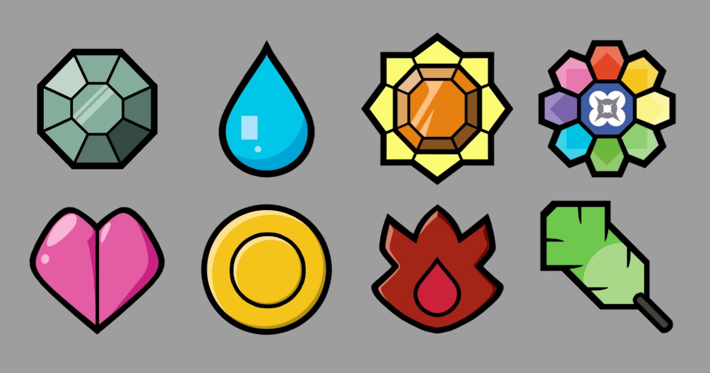
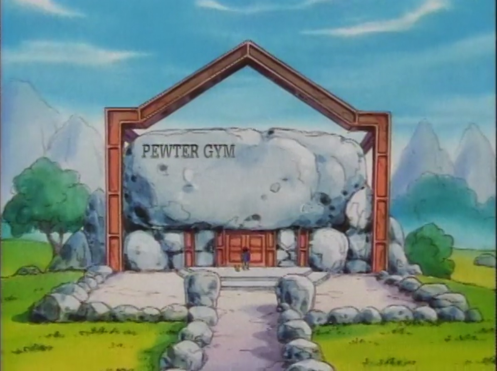
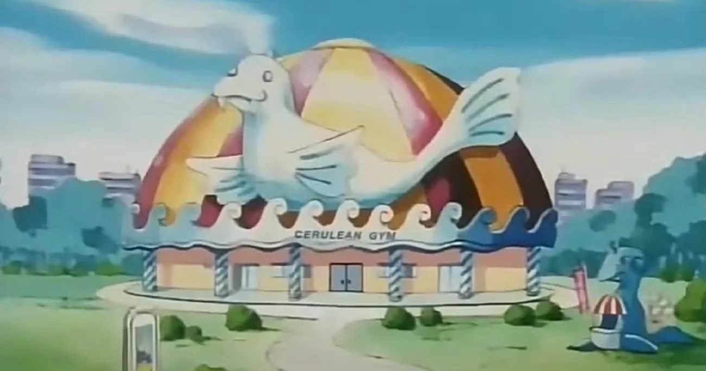
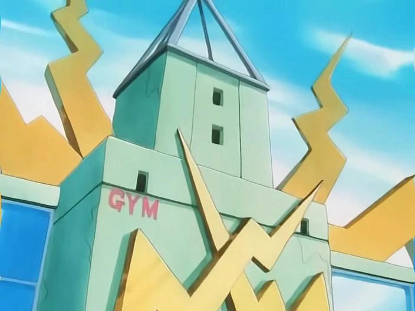
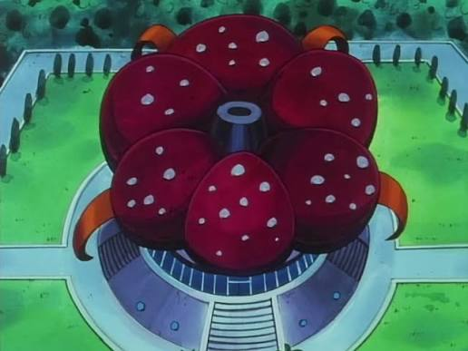
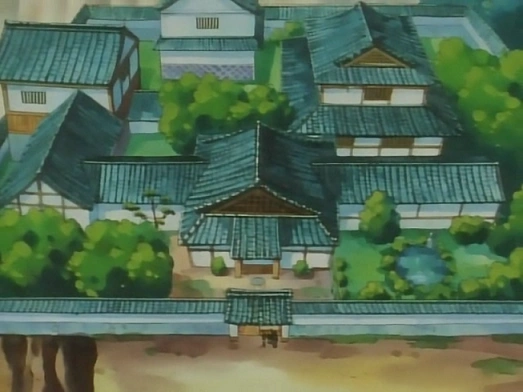
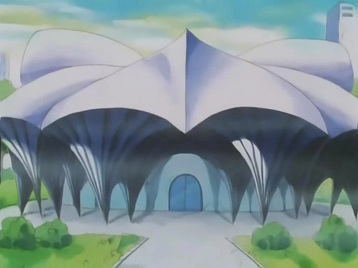
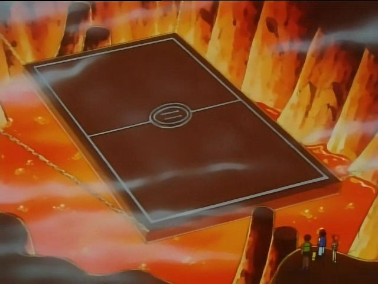
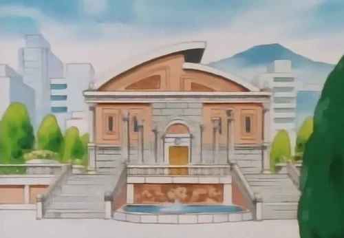

Pokémons do Líder do Ginásio:

Geodude

KANTO · 8 GINÁSIOS
Enfrente os líderes de ginásio, conheça suas equipes e prepare-se para chegar à Liga Pokémon.

Os ginásios Pokémon são arenas espalhadas pelas cidades de Kanto, onde treinadores de todo o mundo podem testar suas habilidades em batalhas oficiais. Cada ginásio é comandado por um líder, um treinador especialista que costuma montar sua equipe em torno de um tipo de Pokémon específico. Para vencê-lo, o desafiante precisa conhecer bem as fraquezas e as resistências de cada tipo e montar uma estratégia à altura.
Ao derrotar o líder, o treinador recebe como prêmio uma insígnia, um emblema que comprova a vitória e a sua evolução como treinador. Além do valor simbólico, as insígnias também trazem benefícios, como aumentar o poder dos Pokémon e permitir o uso de certos golpes fora de batalha. Em Kanto existem oito ginásios, e conquistar as oito insígnias é o requisito para participar da Liga Pokémon, o grande torneio que coroa o campeão da região.
Os ginásios de Kanto ficam nas seguintes cidades: Pewter City, Cerulean City, Vermilion City, Celadon City, Fuchsia City, Saffron City, Cinnabar Island e Viridian City.
Já as oito insígnias que o treinador pode conquistar são: Insígnia Pedra, Insígnia Cascata, Insígnia Trovão, Insígnia Arco-íris, Insígnia Alma, Insígnia Pântano, Insígnia Vulcão e Insígnia Terra.
Quer descobrir qual insígnia pertence a cada ginásio? Só há um jeito: encarar os desafios e conquistar cada uma delas.

O ginásio de Pewter City é o primeiro desafio de muitos treinadores em Kanto e funciona como uma boa prova de fogo para quem está começando a jornada. Ele é do tipo Pedra, e seu líder é Brock, um treinador firme e dedicado que sonha em se tornar um grande criador de Pokémon. Quem vence a batalha conquista a Insígnia Pedra.

Em Cerulean City fica um ginásio cheio de piscinas, perfeito para os Pokémon aquáticos. Ele é do tipo Água, e sua líder é Misty, uma treinadora determinada e competitiva que não gosta de perder. Ao derrotá-la, o desafiante recebe a Insígnia Cascata.



O ginásio de Vermilion City fica na cidade portuária de Kanto e é conhecido por seus desafios elétricos. Ele é do tipo Elétrico, e seu líder é o Lt. Surge, um ex-militar de personalidade forte que confia no poder de seus Pokémon. Quem o vence leva para casa a Insígnia Trovão.



Em Celadon City, o ginásio lembra um jardim bem cuidado, repleto de plantas. Ele é do tipo Planta, e sua líder é Erika, uma treinadora calma e elegante que também ama perfumes e arranjos de flores. Ao vencê-la, o treinador conquista a Insígnia Arco-íris.



O ginásio de Fuchsia City é conhecido pelas armadilhas e pela atmosfera misteriosa. Ele é do tipo Veneno, e seu líder é Koga, um ninja habilidoso que trabalha com tática e surpresa. Quem passa pelo desafio recebe a Insígnia Alma.



Em Saffron City fica um dos ginásios mais intrigantes de Kanto, cheio de salas conectadas por teletransportadores. Ele é do tipo Psíquico, e sua líder é Sabrina, uma treinadora séria e enigmática, famosa por seus poderes mentais. Ao derrotá-la, o treinador ganha a Insígnia Pântano.



O ginásio de Cinnabar Island fica numa ilha vulcânica, e o calor é a marca do lugar. Ele é do tipo Fogo, e seu líder é Blaine, um cientista experiente e bem-humorado que adora enigmas. Quem vence a batalha conquista a Insígnia Vulcão.



O ginásio de Viridian City é o último desafio da jornada e costuma só abrir as portas para treinadores já experientes. Ele é do tipo Terra, e seu líder é Giovanni, um treinador poderoso e misterioso, conhecido também como o chefe da Equipe Rocket. Ao derrotá-lo, o desafiante recebe a Insígnia Terra e fica pronto para a Liga Pokémon.